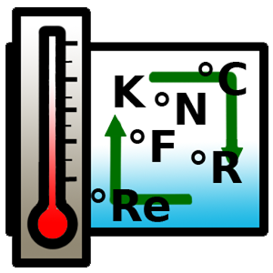

Conversor de Temperaturas

Conversor de temperaturas el cual permite hacer conversiones de temperaturas (Celsius, Fahrenheit o Kelvin). La forma de uso sería la siguiente. - EJEMPLO DE USO: 32C to K para pasar de Celsius a Kelvin (to es opcional).